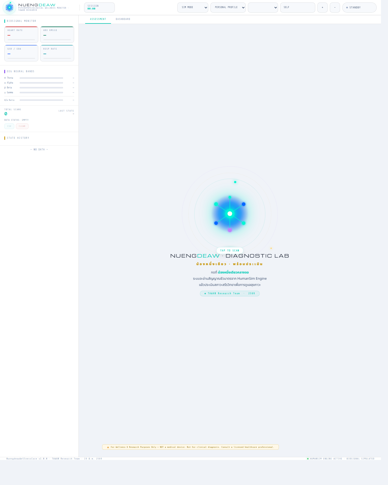
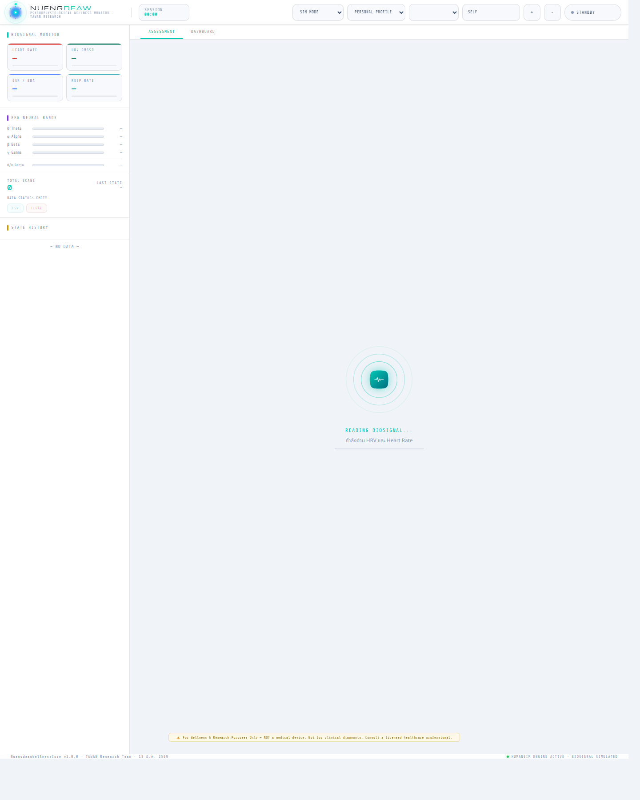
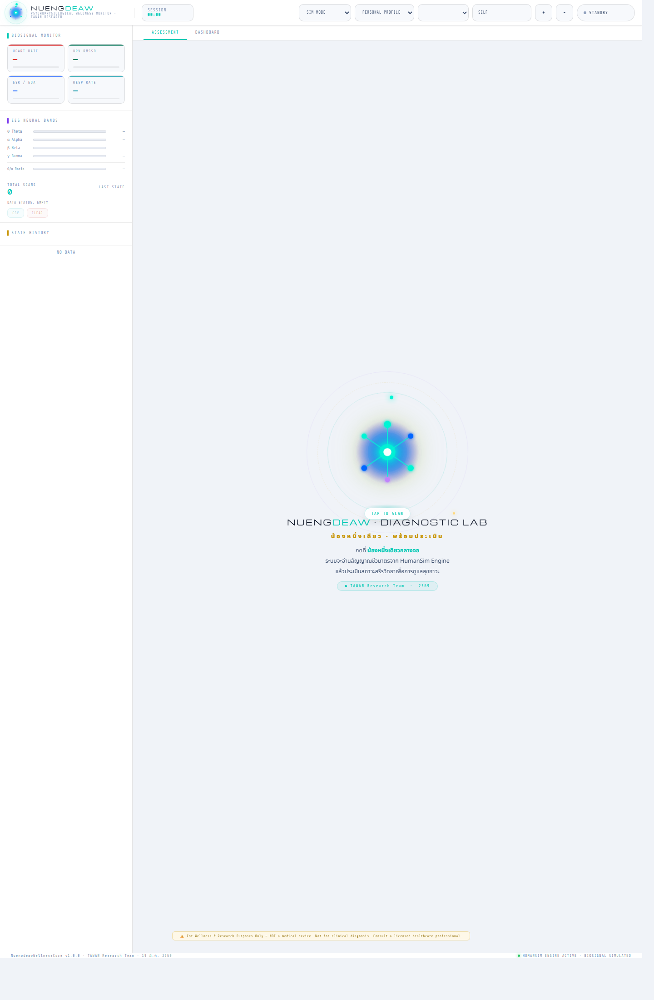
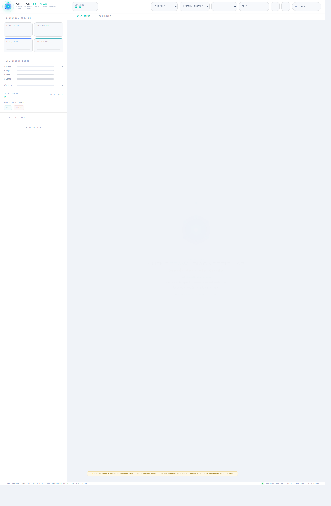

คู่มือใช้งานระบบติดตามสัญญาณชีวภาพและประเมินภาวะผู้ใช้งาน
ระบบนี้ใช้สำหรับอ่านสัญญาณจาก Wearable หรือข้อมูลจำลอง แล้วประเมินสภาวะของผู้ใช้งานแบบเรียลไทม์ พร้อมแสดงผลบนหน้าจอ บันทึกประวัติ พิมพ์รายงาน และส่งต่อผลไปยังขั้นตอนดูแลถัดไป
1. ภาพรวมระบบ
Nuengdeaw Wellness Monitor เป็นระบบหน้าเว็บสำหรับติดตามสัญญาณชีวภาพและประเมินสภาวะผู้ใช้งาน โดยข้อมูลที่ใช้หลัก ๆ ได้แก่ HR, HRV, GSR/EDA, RR และ EEG bands จากนั้นระบบจะประมวลผลและสรุปผลในรูปแบบ Assessment, Dashboard, การแจ้งเตือน และรายงานสำหรับการส่งต่อ
ใช้ทำอะไร
- ติดตามสัญญาณชีวภาพแบบทันที
- ประเมินภาวะความพร้อมและความเสี่ยง
- บันทึกผลแต่ละครั้งเป็นประวัติ
- พิมพ์รายงานและส่งต่อข้อมูล
รูปแบบการใช้งาน
- Sim Mode สำหรับทดสอบระบบ
- Wearable Mode สำหรับอุปกรณ์จริง
- Personal Profile สำหรับใช้งานทั่วไป
- Clinic Profile สำหรับงานคลินิก
2. อุปกรณ์ที่รองรับ
Polar H10 / Verity Sense
ใช้สำหรับอ่าน HR และ RR interval เพื่อนำไปคำนวณ HRV ผ่าน Web Bluetooth
Empatica E4
ใช้สำหรับอ่าน HR, HRV, GSR/EDA และ RR โดยเชื่อมผ่าน E4 Streaming Server และ WebSocket
Muse 2 / Muse S
ใช้สำหรับอ่านสัญญาณ EEG และคำนวณ Theta, Alpha, Beta, Gamma รวมถึง Theta/Alpha Ratio
Generic Device
เป็นช่องทางขยายระบบสำหรับอุปกรณ์อื่น ๆ โดยต้องพัฒนา connector และ mapping เพิ่มเอง
3. ระบบรับสัญญาณอะไรบ้าง
| สัญญาณ | ความหมาย | การใช้งานในระบบ |
|---|---|---|
| HR | อัตราการเต้นหัวใจ | ใช้ดูภาวะตื่นตัว ความเครียด และความผิดปกติของชีพจร |
| HRV (RMSSD) | ความแปรปรวนของช่วงการเต้นหัวใจ | ใช้ประเมินสมดุลระบบประสาทอัตโนมัติและภาวะเครียด |
| GSR / EDA | การตอบสนองทางไฟฟ้าของผิวหนัง | ใช้ดูระดับการตื่นตัวและการตอบสนองของระบบซิมพาเทติก |
| RR | อัตราการหายใจ | ใช้ตรวจภาวะหายใจเร็ว หายใจช้า หรือเสี่ยงหยุดหายใจ |
| EEG Bands | Theta, Alpha, Beta, Gamma | ใช้ประเมินภาระสมอง ความล้า และความพร้อมด้านการรับรู้ |
4. Baseline และ Profile
Personal Baseline
คือค่าพื้นฐานรายบุคคลในสภาวะพักนิ่ง ระบบจะเก็บตัวอย่างหลายครั้งแล้วคำนวณค่าเฉลี่ยของ HR, HRV, GSR และ RR จากนั้นนำไปสร้างเกณฑ์แบบ adaptive เพื่อให้ประเมินได้เหมาะกับแต่ละคนมากขึ้น
Clinic Standard
คือเกณฑ์มาตรฐานกลางของระบบสำหรับงานคลินิก ใช้มาตรฐานเดียวกันทุกเคส เพื่อให้เปรียบเทียบระหว่างรายได้ง่าย และเหมาะกับงานที่ต้องมีความสม่ำเสมอในการคัดกรอง
Personal Profile
- ใช้ baseline ส่วนบุคคลได้
- ถ้ายังไม่ calibrate จะใช้ static fallback
- เหมาะกับการติดตามรายบุคคล
Clinic Profile
- บังคับใช้ clinic standard
- รองรับการพิมพ์รายงาน
- รองรับการส่งต่อแบบ handoff
5. ขั้นตอนการเชื่อมต่ออุปกรณ์จริง
Polar H10 / Polar Verity Sense
- เปิดอุปกรณ์ Polar และตรวจสอบแบตเตอรี่
- เปิด Bluetooth บนคอมพิวเตอร์
- เปิดระบบผ่านเบราว์เซอร์ที่รองรับ Web Bluetooth
- เปลี่ยนการตั้งค่าอุปกรณ์จาก
mockเป็นpolar - เลือก
WEARABLE MODEแล้วเริ่มสแกน - เลือกอุปกรณ์ Polar จากหน้าต่างเชื่อมต่อ
Empatica E4
- เปิดอุปกรณ์ Empatica E4
- เปิด
E4 Streaming Server - เปลี่ยนการตั้งค่าอุปกรณ์เป็น
empatica - เลือก
WEARABLE MODEแล้วเริ่มสแกน - ระบบจะเชื่อมต่อผ่าน WebSocket และ subscribe ค่าที่จำเป็น
Muse 2 / Muse S
- เปิดอุปกรณ์ Muse
- เตรียม SDK หรือ
muse-jsให้พร้อม - เปลี่ยนการตั้งค่าอุปกรณ์เป็น
muse - เลือก
WEARABLE MODEแล้วเริ่มสแกน - ระบบจะอ่าน EEG readings และคำนวณค่า band power ที่เกี่ยวข้อง
6. ลำดับการทำงานของระบบ
- ผู้ใช้เลือกโหมดใช้งานและกำหนด Subject ID
- ระบบอ่านข้อมูลจาก Sim หรือ Wearable
- ตรวจสอบคุณภาพสัญญาณและ artifact
- แยกค่า bio signals และ EEG bands
- เปรียบเทียบกับ threshold ของ profile ที่เลือก
- ประเมิน state และ critical alerts
- แสดงผลในแท็บ Assessment
- บันทึกข้อมูลลง session log และส่งออกได้เป็น CSV
- ใน Clinic Profile สามารถพิมพ์หรือส่งต่อผลได้
7. ภาพหน้าจอประกอบ




8. ภาวะที่ระบบประเมินได้
| ภาวะ | ความหมายโดยสรุป | ลักษณะสัญญาณโดยสังเขป |
|---|---|---|
| Flow | สมาธิดีและสมดุล | HR ปกติ, GSR อยู่ในเกณฑ์, HRV ดี |
| Alert / Ready | พร้อมใช้งานตามปกติ | ค่าชีวภาพอยู่ในช่วงปกติ, HRV ดี |
| Acute Stress | เครียดเฉียบพลัน | HR สูง, GSR สูง, HRV ลด, RR เพิ่ม |
| Confusion | สับสนหรือรับรู้ผิดปกติ | Theta สูง, HRV ลด, สัญญาณตื่นตัวผิดสมดุล |
| Low Arousal | ความตื่นตัวต่ำ | HR ต่ำ, GSR ต่ำ, การตอบสนองช้าลง |
| Fatigue / Drowsiness | อ่อนล้าหรือง่วง | Theta สูง, ความพร้อมลดลง, เสี่ยง microsleep |
| Neutral | อยู่ในเกณฑ์ปกติ | ค่าใกล้ baseline หรืออยู่ในช่วงที่คาดหมาย |
| Apnea Risk | เสี่ยงหยุดหายใจ | RR ต่ำมากกว่าปกติชัดเจน |
| Hyperventilation | หายใจเร็วผิดปกติ | RR สูงเกินเกณฑ์ |
| High Cognitive Load | ภาระสมองสูง | Theta/Alpha ratio สูง |
9. การพิมพ์รายงานและการส่งต่อ
การพิมพ์รายงาน
ใน Clinic Profile ผู้ใช้สามารถกด PRINT เพื่อสร้างรายงาน Clinic Screening Report ซึ่งมีข้อมูล Subject ID, Profile, Baseline Source, เวลาประเมิน, สรุปผล, ค่า HR/HRV/GSR/RR, ค่า Theta/Alpha รวมถึง Critical Alerts และ Findings
การส่งต่อเข้าสู่ระบบกลาง
ถ้ามีการตั้งค่า endpoint ผ่านปุ่ม SET TARGET ระบบจะส่งผลออกด้วย HTTP POST ในรูปแบบ JSON พร้อมข้อมูลสรุปของ state, สัญญาณหลัก, alerts และ findings
การส่งออกแบบไฟล์ JSON Handoff
หากยังไม่ได้ตั้ง endpoint หรือส่งไม่สำเร็จ ระบบจะสร้างไฟล์ JSON handoff ให้ดาวน์โหลดแทน เพื่อใช้ส่งต่อด้วยตนเองในขั้นตอนถัดไป
10. แนวทางใช้งานในงานคลินิก
- เลือก Clinic Profile
- กำหนด Subject ID หรือ Case ID
- ตรวจว่า baseline source เป็น
clinic_standard - เชื่อมต่ออุปกรณ์จริงให้ครบถ้วน
- กด Scan และตรวจผลใน Assessment
- ถ้าพบ Critical Alert ให้หยุดกิจกรรมและประเมินอาการร่วมทันที
- กด
PRINTเพื่อพิมพ์รายงาน หรือกดSEND TOเพื่อส่งต่อ - ถ้าระบบกลางยังไม่พร้อม ให้ใช้ไฟล์ JSON handoff แทน